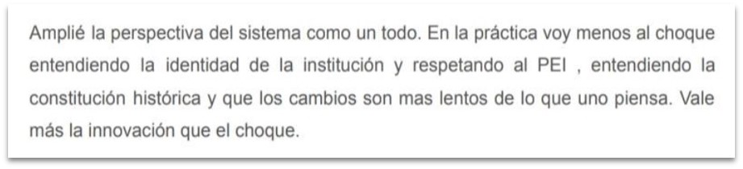

Cuarto de otoño
Materias
Fundamentos Pedagógicos de la gestión educativa
Calificado por: Graciela Hernandez
Muy buen trabajo que habla de buena cursada. Excelente
la evidencia que muestras en el punto 1. En cuanto al
análisis de la institución creo que no es el más
destacado el principio de fijación, en realidad no hay
mucha que fijar. Está confusa la expresión en la que
explicas en este punto lo que has avanzado. Me encanta
tu conclusión:
"vale más la innovación que el choque" ¡Excelente!
Creo que es el único modo.
Me parece muy interesante que hayas logrado ordenar las
ideas que, por la práctica, intereses y lecturas, por
supuesto que ya tenías. ¡Excelente logro! Y espero que
nos recuerdes y no olvides que has de ser un líder. Ya
sea que llegues a "Director" o no. Tienes detrás muchas
personas de las que sos responsable. (Como el Principito
con la rosa).
Proceso de aprendizaje
El pasar por esta materia y por dos grandes
profesionales, generó en mí la noción de tomar posición
de líder de personas y gestor de cosas, saliendo del
lugar subjetivo de docente. Si bien no estoy en este
momento ocupando un espacio directivo, si puedo observar
a mis compañeros ya directivos y la insistencia positiva
de las docentes de auto pensarnos y vernos desde ese
lugar y como bien me señaló maría en un foro de T.I,
como bajar la teoría a la práctica reflexiva.
Esta ficha fue cayendo y como bien lo señalé en el
trabajo final, ahora pienso los cambios, tanto en el PEI
como en los procesos mismo de cambio, cómo una
transición lenta donde prima la INNOVACIÓN y no
la ruptura sin fundamentos pedagógicos.
- Desde mis propias prácticas solía ser
disruptivo sin planificación y esto generó tensiones
innecesarias.
AUTOEVALUACIÓN
La interacción entre foros fue un poco limitada por cuestiones de tiempo pero la poco interacción muy valiosa.
Principios de organización educativa
Comentario: Facundo Chirizola
En base a lo leído e ilustrado por los vídeos, me quedo
con esta idea de la construcción de cultura dentro de
las instituciones educativas. La noción no solo de
sistema, sino de cultura. Parándonos unos instantes en
esta idea, toda cultura se constituye de tensiones,
intereses y creencias. Es por esto que veo necesario que
nos involucremos como directores en la construcción de
una cultura, por ejemplo, digital, más democrática,
participativa, con escucha activa. Como sabemos, la
cultura es una construcción social por eso es menester
saber con claridad qué tipo de cultura institucional
queremos abordar.
Me desempeño en escuelas y universidad pública donde no
se da el ideario de los compañeros que los leí muy
atentamente, pero si como normativa institucional, la
noción de justicia social que van con los lineamientos
del gobierno de turno.
Proceso de aprendizaje
Durante este módulo, mediante el intercambio entre compañeros, fui tomando conciencia de la profundidad de la teoría y práctica que hay respecto de la construcción de una cultura que aborde las complejidades del siglo 21. Toda forma de organización se ve sujeta a la cultura y esta tiene que ser observada desde sus creencias, valores y constitución histórica.
AUTOEVALUACIÓN
Pienso que acá no encuentro debilidades porque fue muy taxativo todo y los intercambios con compañeros fueron de gran utilidad para tomar posición.
Antropología filosófia
Evidencia de aprendizaje:
Estimado Facundo, gracias por tu envío. He leído tu texto y no encuentro que surja de la lectura de los materiales de nuestro curso. Entiendo que traigas tus lecturas, tus trayectos formativos y tus propias ideas. Eso es esperable y enriquecedor. No obstante, con este Desempeño buscamos que puedas incorporar nociones nuevas, tomadas del estudio de los materiales que se proponen. Te propongo que vuelvas sobre los textos y rehagas esta actividad. Con gusto volveremos a revisar. Cualquier duda, estamos a disposición.
El usar solo mis conocimientos previos, dado que soy docente de filosofía leí poco y no utilice el material de la cátedra por lo que volver fue darme cuenta de lo importante que es seguir un hilo conductor que tiene que ver con toda la planificación de la carrera
Proceso de aprendizaje
Ver a la libertad como una cualidad de la voluntad humana y como así también de la inteligencia, siendo que lo encontramos en los actos. Esto me hace reformular la cosmovisión que tengo del hombre en relación al ser directivo ( en un sentido proyectivo). Hacer uso de la libertad en favor del crecimiento personal y colectivo de la institución y tomar distancia del objeto observado. Una clara evidencia de aprendizaje es lo que digo en el video del examen final: ahora observo a los sujetos sociales desde una óptica más integral siendo que mi posición ideológica está más inclinada a la corriente del materialismo dialéctico. Ahora observo aspectos más subjetivos/ “metafísicos” , que se desprenden del hermetismo en el que me movía.
AUTOEVALUACIÓN
Al tener un conocimiento previo en la materia, no leí con detenimiento académico el total del material lo cual resultó un grave error, dado que al momento de hacer el desempeño 2, lo hice desde mis saberes y fui desaprobado. Luego aborde el trabajo desde los contenidos de la materia y me saque un 10
Taller de integración
Comentario: Facundo Chirizola
Buenos días! Pienso que la práctica reflexiva entre
docente y directivo, se ve constituida por una noción de
sistema compuesta por diferentes estrategias y
modalidades, algunas cruzadas entre sí y otras, más
propias a su disciplina: El ser docente y sus
características propias y el ser gestor de una
institución con las suyas.
La importancia de la práctica reflexiva en ambos casos,
se ve sujeta a la idea de la constante revisión de las
diferentes situaciones, tanto positivas como negativas (
esto lo planteo bajo los lineamientos de Anijovich). (En
mi caso personal no adhiero a esa idea, ya que pienso
que todo suceso humano es una integración en sí misma,
pero esto lo dejo para otro momento) Reflexionar en un
sentido constructivo.
En mi caso personal, utilizo la observación entre pares
ya que es promovida por la misma institución. La
experiencia en sí misma es muy rica, ya que tengo
compañeros y compañeras extremadamente innovadores y
otros , fatales. Por lo que aprendo de ambas
situaciones. Algunos son muy progresos y amorosos, otros
un poco más conservadores de prácticas punitivas y
demás. Me nutro de todo como el todo/integración. Sin
lugar a dudas, la idea de sistematización es la más
importante para mi, el Ateneo como metodología y los
protocolos.
Abrazos y lxs leo :)
Proceso de aprendizaje
El taller de Integración auno todos los procesos de aprendizaje de manera transversal con la joyita de los encuentros de café. Bajar toda la teoría para vincularla y reflexionar a partir de la práctica directiva. Seleccione el video y la reflexión que hice en uno de los foros, dado que abordé la temática con una noción de sistema. La noción de sistema se me fijó en los diferentes dispositivos que hacen al sistema. Para esto es menester reflexionar sobre las prácticas en sí mismas (en este estadio me encuentro). Como debatimos en uno de los encuentros, es la práctica sobre la reflexión y la reflexión sobre la práctica. Como una especie de ir y volver para ser mejores. En este espacio de reflexión encontré los contenidos y su acompañamiento a la integración de las partes y no ver los aspectos de manera aislada.
AUTOEVALUACIÓN
La participación en los debates, la interacción de los foros y los vídeos me resultaron de gran utilidad a la hora de ver el todo y como andamiaje me ayudó a cerrar criterios. Me tomo una licencia poética para decir que esta materia en términos evaluativos me resultó de faro.